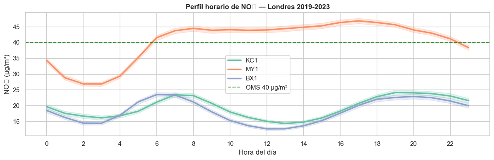
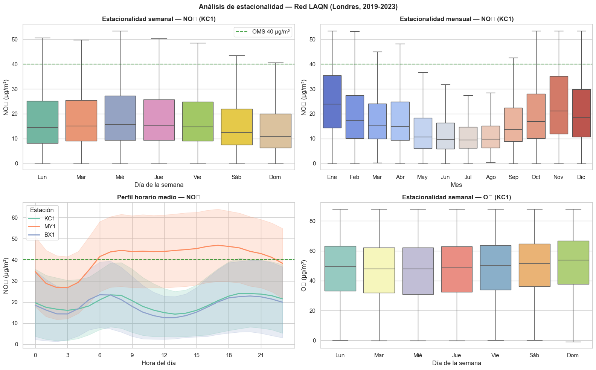
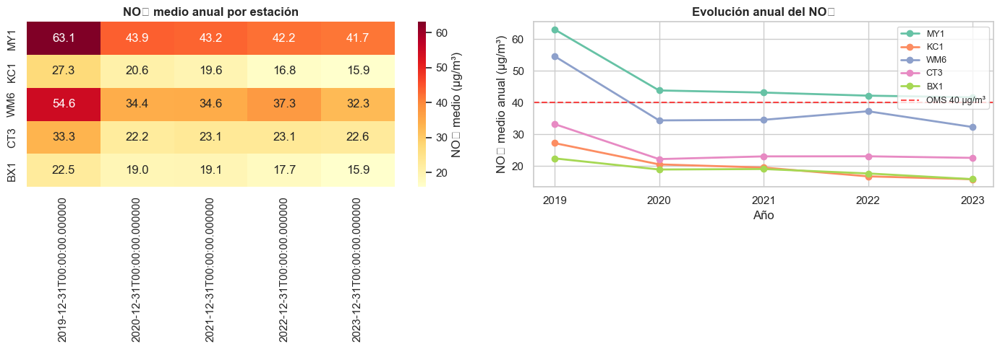
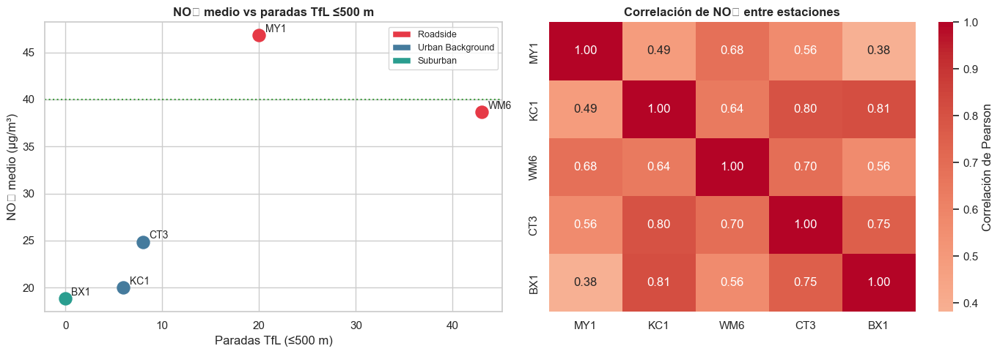
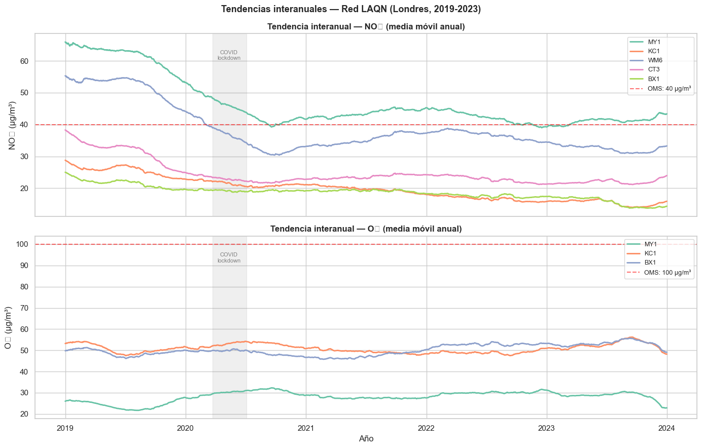
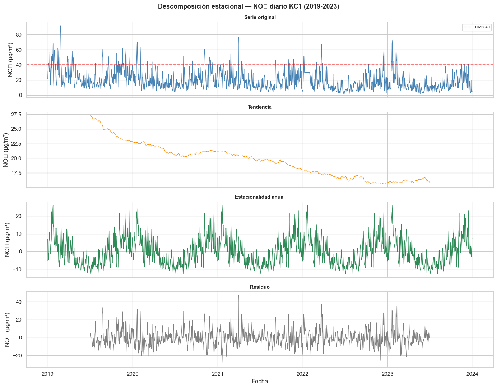
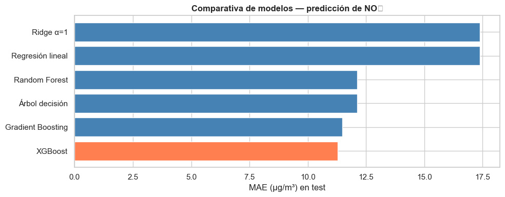
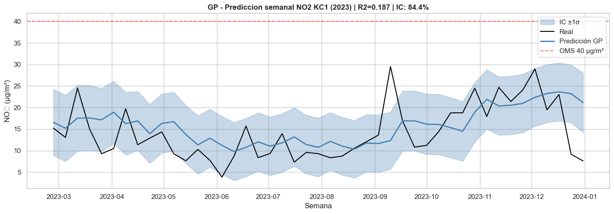
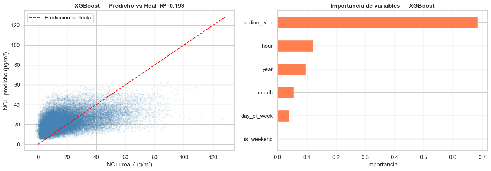

Trabajo final · Ciudades Inteligentes · UC3M · 2026
Emilio Hermosa Schiantarelli (NIA 100451150) · Carlos Sanchez Arroyo (NIA 100451282) · Rodrigo Valderrey Tarrero (NIA 100451271)
RQ1 Ciudad realRQ2 Movilidad + SostenibilidadRQ3 DashboardRQ4 Grafo + Series temporalesRQ5 Mapas geográficos
Indicadores clave — Red LAQN + TfL Londres 2019-2023

Perfil horario de NO₂ por estación

Estacionalidad semanal y mensual

Comparativa anual entre estaciones

Correlación movilidad ↔ contaminación
Representación geográfica (RQ5)
Series temporales (RQ4 — parte A)
Perfil horario de NO₂ (2019-2023)

Tendencia interanual con media móvil anual

Descomposición estacional STL — KC1
Estacionalidad semanal y mensual NO₂ + O₃
Modelos predictivos

Comparativa de 6 modelos (MAE en test)

GP — predicción semanal NO₂ con IC ±1σ

XGBoost — predicho vs real + importancia
Estaciones LAQN — NO₂ y cobertura TfL
| Estación | Nombre / Ubicación | Tipo | NO2 medio (μg/m³) | Excede OMS (40) | Paradas TfL ≤500m | Dist. parada más cercana (m) |
|---|---|---|---|---|---|---|
| MY1 | Westminster – Marylebone Rd | Roadside | 46.81 | Sí | 20 | 111 |
| WM6 | Westminster – Oxford Street | Roadside | 38.66 | No | 43 | 198 |
| CT3 | Camden – Bloomsbury | Urban Background | 24.87 | No | 8 | 162 |
| KC1 | Kensington – North Kensington | Urban Background | 20.03 | No | 6 | 448 |
| BX1 | Bexley – Belvedere West | Suburban | 18.83 | No | 0 | 1003 |
¿Cuál es la relación entre la infraestructura de transporte público y los niveles de contaminación del aire en Londres? ¿Qué estaciones presentan mayor riesgo ambiental y menor cobertura?
pathways.txt, centralidad de grado (RQ4-B).HeatMap, MarkerCluster, K-means clustering (RQ5).londonair.org.uktfl.gov.ukSe ha utilizado Claude (Anthropic) como apoyo para estructurar el notebook, depurar fragmentos de código y revisar redacción. Todo el código y las conclusiones han sido revisados, ejecutados y validados por los autores.